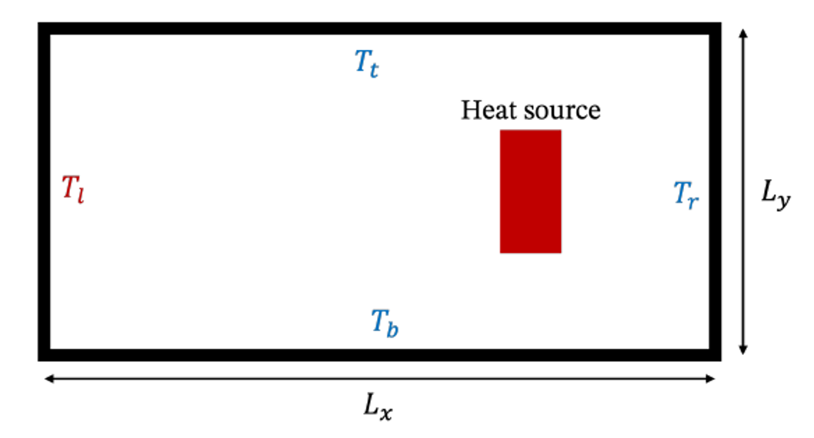
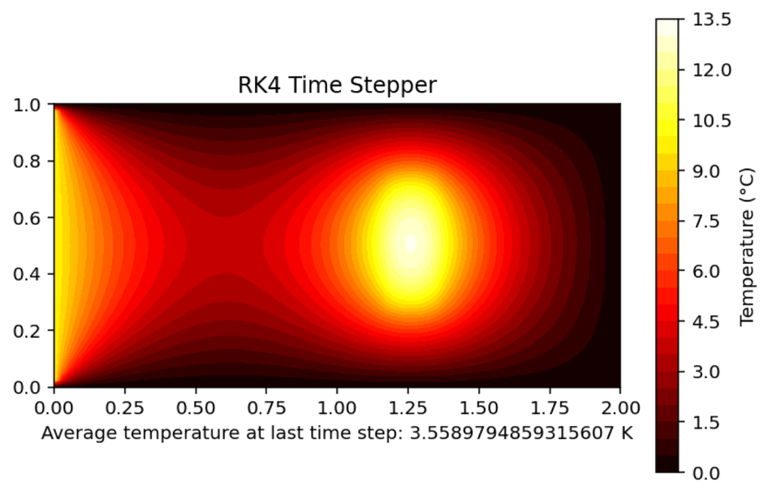

Heat Diffusion Simulation


Overview
- Developed a 2D heat diffusion simulation
- Modeled temperature distribution across a rectangular domain over time
- Added functionality to simulate an internal heat source
My Role
- Used the finite element method and Python to implement an unsteady heat diffusion equation PDE solver
- Used explicit time-stepping schemes such as Forward Euler, Heun, and Runge-Kutta 4th order (RK4)
- Used forward and backward finite differences to calculate the heat flux at each edge
- Used Matplotlib to visualize the simulation results
- Analyzed accuracy and convergence of the three time-stepping schemes
- Used optimization methods to find the ideal location of a specified heat source for the highest average temperature
Skills
Python
Numerical Methods
FEM
Finite Differences
Matplotlib
Numpy